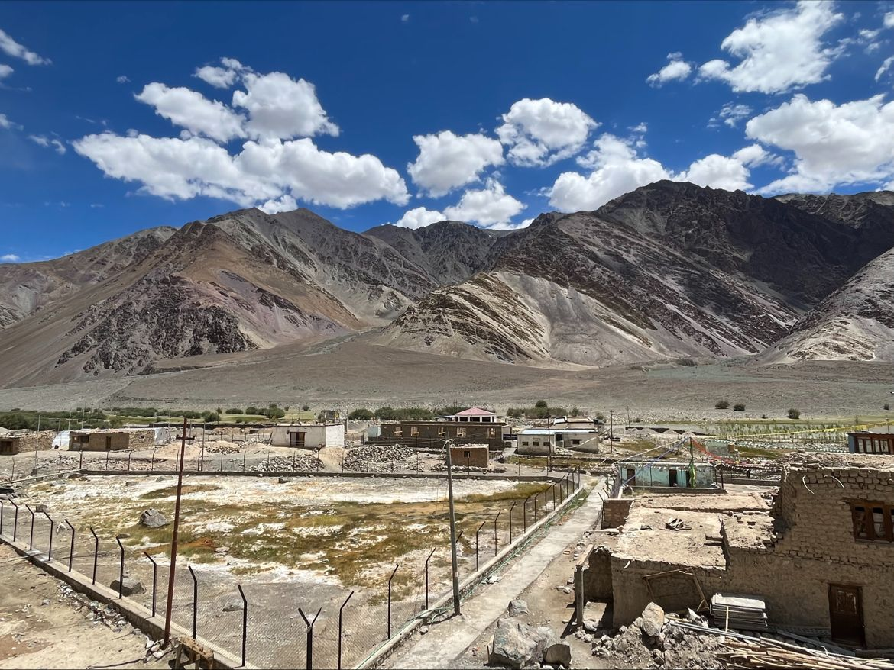

A Research Trip in Ladakh

In the Front row (From left to right: Dr. Sam Thiele, Prof. Khanna, Bhavya Bajpai, Sarthak Sahu), in the back row (Left- Dr. Horthing V zimik, Right- Taxi driver)

Hotsprings view, Chumathang
India has vast potential for geothermal energy, with medium- to high-enthalpy resources in the Himalayas and low-enthalpy reservoirs in both eastern and western India. However, despite this recognized potential and the ever-increasing energy needs of India, no geothermal pilot or direct application has been attempted. This is mostly due to subsurface uncertainties regarding temperatures, flow parameters, and reservoir size that increase investment risk. The proposed exploratory research project aims to reduce this uncertainty by developing outcropping reservoir analogues and thus helping to unlock the geothermal potential of India.
High-altitude deserts, majestic mountains, and a rich cultural tapestry Ladakh, often called the Land of High Passes is a destination that beckons adventurers, researchers, and nature enthusiasts alike. Tucked away in the northernmost region of India, this remote area has captured the imagination of travelers for centuries. Embarking on a research trip to Ladakh is a journey into a world of contrasts, where ancient traditions meet breathtaking landscapes.